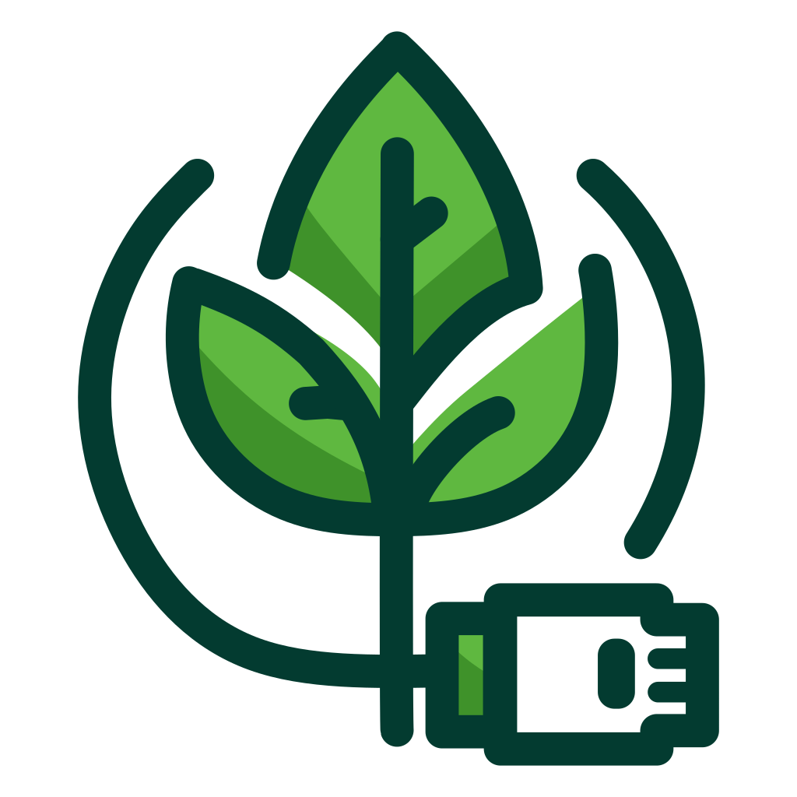
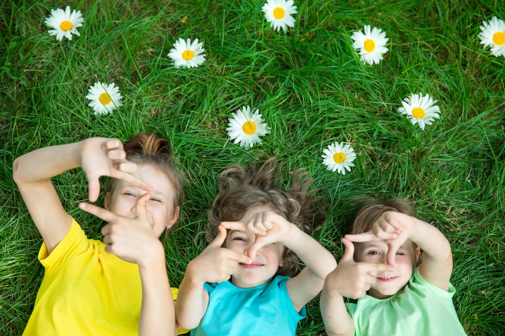
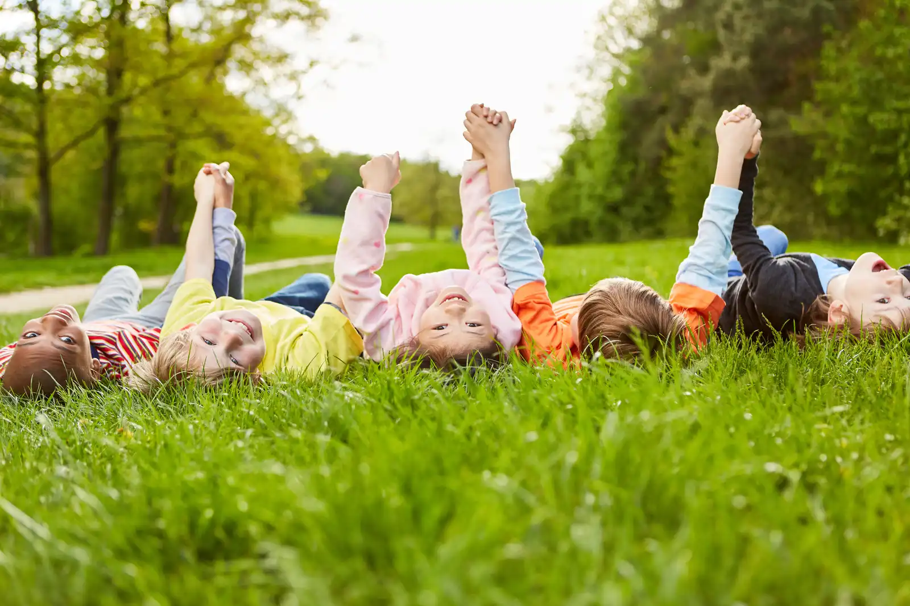

Ce site est destiné aux enseignants de l'enseignement fondamental et du 1e degré de l'enseignement secondaire, à la recherche de ressources pédagogiques innovantes et accessibles gratuitement.

Nous proposons de relier deux concepts actuels en pédagogie et qui, à priori, s’opposent : l’école du dehors et les outils numériques. Nous voulons montrer qu’ils peuvent être complémentaires en proposant des séquences pédagogiques adaptées aux réalités professionnelles des enseignants utilisateurs du micro-site. Ces séquences sont téléchargeables dans la partie activités pédagogiques du site.

Contenu du site
Vous avez la possibilité de découvrir les rubriques suivantes :
- École du dehors : la pédagogie du dehors est présentée brièvement.
- Outils numériques : notre démarche est succinctement expliquée.
- Séquences pédagogiques : cette rubrique reprend cinq séquences pédagogiques intégrant le numérique.
- Équipe : nous présentons l'équipe de L'école branchée sur la nature.
- Volet réflexif : pour construire ce micro-site et les séquences pédagogiques intégrant le numérique, nous nous sommes basés sur le modèle théorique PIC-RAT de Kimmons et al. (2020).
- Ressources : nous vous proposons des sites, des références pour vous outiller et nous vous invitons à partager avec tous les utilisateurs de ce micro-site vos expériences, vos conseils, vos remarques.
